Released on August 5, 2009
(Next Release on August 12, 2009)
Connections: Why Refinery and Electric Power Damage on the Gulf Coast Affects Petroleum Product Supplies and Prices Elsewhere
When hurricanes disrupt power and refinery production on the Gulf Coast, shortages of gasoline and other petroleum products can develop more than a thousand miles away. Most refinery capacity in the United States is concentrated in just a few areas, with pipelines, tankers, and barges moving the product from those refineries to terminals near the final customers. The majority of that movement is through pipelines. Figure 1 shows the Nation's four major concentrations of refining capacity, located on the Gulf Coast, in the eastern Midwest (mainly in Illinois, Indiana, and Ohio), on the East Coast around Pennsylvania, New Jersey, and Delaware, and on the West Coast, mainly in California. These refining centers account for about 80 percent of all U.S. refining capacity.
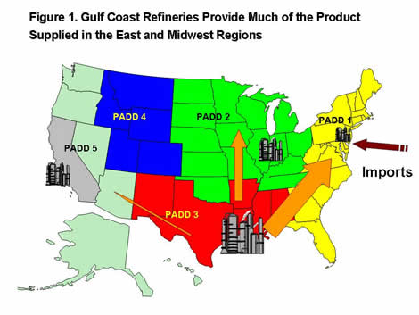
Note: Refinery and arrow sizes indicate relative refining capacity and product flows, respectively.
The largest refining center is along the Texas and Louisiana coasts - the refinery concentration most affected by hurricanes. At 7.4 million barrels per day, these coastal refineries represent 42 percent of the nation's refining capacity and almost 90 percent of the refining capacity in Petroleum Administration for Defense District (PADD) 3. (California and Washington refineries represent about 15 percent of national capacity, while the eastern-Midwest refining center accounts for about 13 percent, and East Coast refineries about 9 percent.)
Refineries in PADD 3 provide significant product supply to both the East Coast and Midwest. For example, about 60 percent of all gasoline produced in PADD 3 refineries is moved to other regions for consumption. In 2008, nearly half of the gasoline consumed in the East Coast region (PADD 1) - about 1.6 million barrels per day - was supplied from PADD 3. And PADD 3 refineries supplied about 18 percent - approximately 0.5 million barrels per day - of gasoline consumed in the Midwest (PADD 2). PADD 3 also supplies a small amount of gasoline to the West Coast region (PADD 5), mainly Arizona. Most of the gasoline volume moved from PADD 3 to those regions travels by pipeline (80 percent by pipeline into PADD 1, 90 percent into PADD 2, and virtually all into PADD 5.)
The major pipelines that move product from PADD 3 into other regions of the country include the Colonial and Plantation pipelines that carry product from the Gulf Coast up the East Coast. Spurs from these pipelines also bring product to some inland States such as Tennessee. The TEPPCO, Centennial, and Explorer pipelines move significant product from the Gulf Coast into the Midwest. A series of pipelines moves product from PADD 3 into Arizona, which is in PADD 5. While the volumes moving from PADD 3 into PADD 5 are much smaller than those moving into the Midwest and East Coast, they are, nonetheless, critical to States like Arizona.
Products moving through these major pipelines travel in batches, with one type of product abutted against the next in the same pipeline. A given product batch is generally made up of volumes from a number of refineries. These batches do not move quickly. For example, it takes an average of 18.5 days for product to move on the Colonial Pipeline from Houston, Texas to New York Harbor. Volumes from a given batch are scheduled for delivery to different areas along the pipeline.
Although pipelines in the path of a hurricane, as well as refineries, shut down temporarily as the hurricane approaches and passes through, pipelines can continue to experience reduced or total loss of flow for two major reasons. The first is a loss of electricity to their pumping stations. This was a major problem during Hurricanes Rita and Katrina in 2005. While product storage tanks at terminals near to consumers provide some cushion, shortages can develop fairly quickly under these conditions.
The second is pipeline flow loss which occurs if a hurricane has disrupted a large share of the refineries feeding the pipelines for more than a week or two. The volume of product leaving a refinery and going to one of these major pipelines is delivered via smaller pipelines, generally to storage tanks fed by multiple refineries and connected to the major pipeline. A single refinery outage is not usually a problem, but when a number of refineries serving a particular pipeline are shut down for any length of time, such as occurred during several of our recent hurricane seasons, there is no easy or quick way to replace the product lost to that pipeline.
Consumers receiving supplies from a pipeline with reduced inputs generally would not see immediate losses. Pipeline flows would be slowed, and product that is already in storage tanks would begin to be drawn down. If supplies are not restored to the pipeline quickly, scheduled deliveries are reduced, if not altogether skipped. In such cases, an area along the pipeline may temporarily run out of product before the next available volumes to serve the area arrive. During such times, much rescheduling occurs to help prevent any one area from suffering severe shortages Ultimately, if input losses to the pipeline are large enough, the pipeline may have to shut down, which has rarely occurred.
Refinery supply losses to pipelines were a major factor behind product shortages that occurred during the Hurricanes Gustav and Ike in 2008. Refinery supply was disrupted - not from wind or water damage particularly - but from power outages. Refining supply to the Colonial and Plantation pipelines was reduced for some time, and shortages began to emerge, particularly in the Southeast coastal areas up through North Carolina. These are areas that have little harbor or river access for alternative supply delivery from imports or other refineries. Truck delivery from hundreds of miles away can help to some extent, but not enough to prevent local shortages in such circumstances due to the magnitude and wide-spread nature of large hurricane losses. In some areas, Federal and State fuel waivers allowing regions to use whatever fuel might be available helped to spread available fuel to areas running short, but in other areas, no fuel was available. Shortages could have been much worse without the industry and government coordination that occurs during such circumstances.
Because of the highly connected network between the large refining center on the Gulf Coast and other areas of the United States, especially the East Coast and Midwest, hurricane damage to electricity supplies or to multiple Gulf Coast refineries can give rise to tight product supplies, price increases, and even shortages far away from the hurricane damage.
U.S. Average Gasoline and Diesel Prices Climb Again
For the second consecutive week, the U.S. average price for regular gasoline increased, this week by five cents. At $2.56 per gallon, the national average is $1.32 below the year-ago price. On the East Coast and in the Midwest, the average price moved up a nickel to $2.53 and $2.51 per gallon, respectively. Although the Gulf Coast registered the largest increase of any region, jumping nearly seven cents to $2.43 per gallon, the price there remained the lowest of any region. The Rocky Mountains had the smallest increase of any region, moving up just under a penny to $2.51 per gallon. On the West Coast, the price rose six cents to $2.83 per gallon, while the price in California climbed seven cents to reach $2.90 per gallon.
The national average price for diesel advanced two cents to $2.55 per gallon. The average was $1.95 below last year. With the exception of the Rocky Mountains, prices rose throughout the Nation. On the East Coast, the average increased three cents to $2.58 per gallon. In the Midwest and on the Gulf Coast, the averages rose two cents to $2.52 and $2.51 per gallon, respectively. The average in the Rocky Mountains was essentially unchanged at $2.54 per gallon. On the West Coast, the average price increased three cents to $2.64, while the average in California moved up four cents to $2.76 per gallon.
Propane Posts Modest Build
Inventories of propane added 0.6 million barrels this week, bringing total stocks to approximately 69.0 million barrels. For the month of July, the build in primary inventories of propane totaled 8.2 million barrels, 1.2 million barrels above the most recent 5-year average of 7.0 million barrels for this month. The largest weekly gain was in the Midwest region where 1.0 million barrels were added to inventories. The East Coast region fell by 0.1 million barrels while the combined Rocky Mountain/West Coast region rose a small amount. The Gulf Coast region shed 0.4 million barrels of stocks. Propylene non-fuel use inventories fell slightly last week, with its share of total propane/propylene inventories remaining at 3.3 percent. Propane production fell to its lowest level since early May at 1.0 million barrels per day.
Text from the previous editions of This Week In Petroleum is now accessible through a link at the top right-hand corner of this page.
| Retail Prices (Cents Per Gallon) | |||||||
| 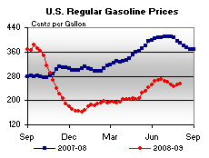 | 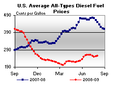 | ||||||
| Retail Data | Changes From | Retail Data | Changes From | ||||
| 08/03/09 | Week | Year | 08/03/09 | Week | Year | ||
| Gasoline | 255.7 | Diesel Fuel | 255.0 | ||||
| Spot Prices (Cents Per Gallon*) | |||||||||||||||||||||||||||||||||||
| 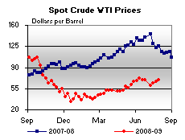 | 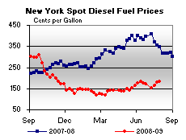 | ||||||||||||||||||||||||||||||||||
| 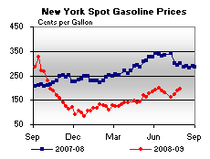 | 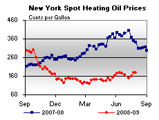 | ||||||||||||||||||||||||||||||||||
|
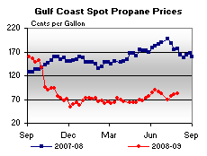 | ||||||||||||||||||||||||||||||||||
| *Note: Crude Oil WTI Price in Dollars per Barrel. | |||||||||||||||||||||||||||||||||||
| Stocks (Million Barrels) | |||||||
| 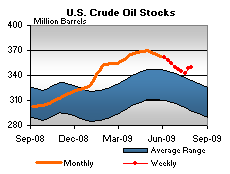 | 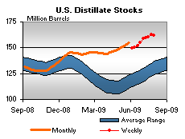 | ||||||
| 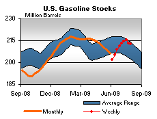 | 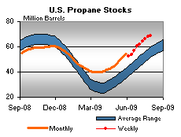 | ||||||
| Stocks Data | Changes From | Stocks Data | Changes From | ||||
| 07/31/09 | Week | Year | 07/31/09 | Week | Year | ||
| Crude Oil | 349.5 | Distillate | 161.5 | ||||
| Gasoline | 212.9 | Propane | 68.955 | ||||